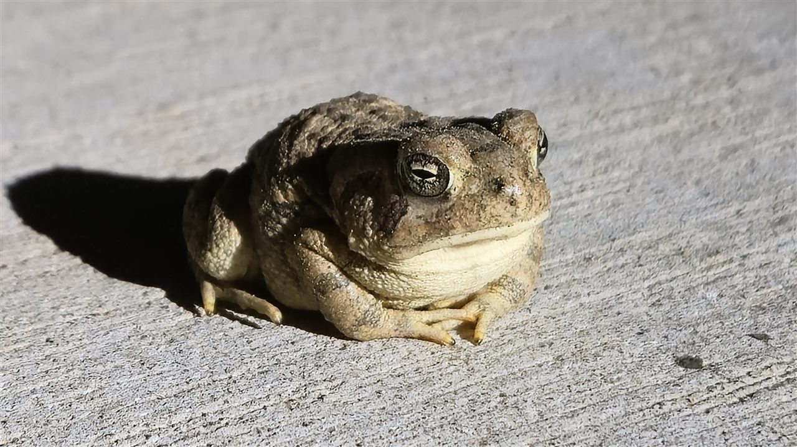
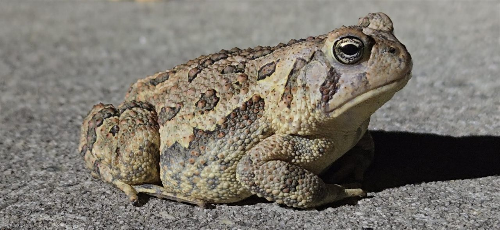
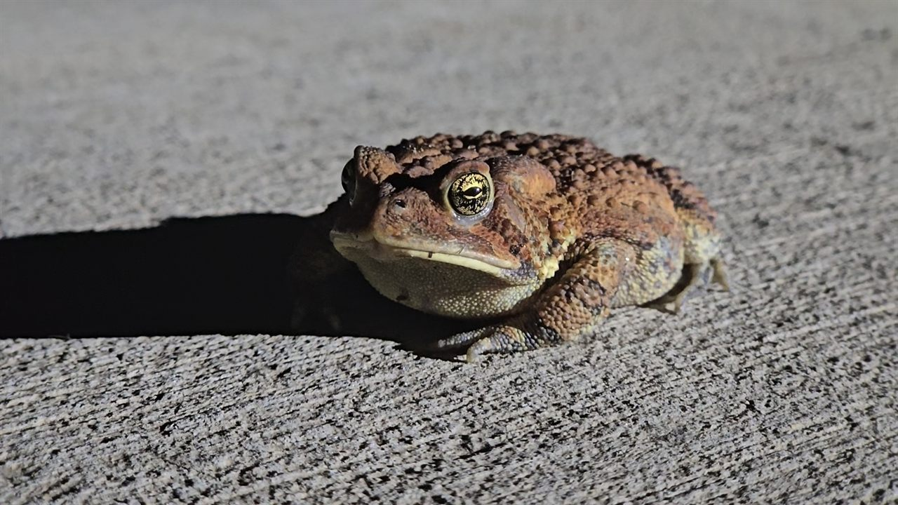
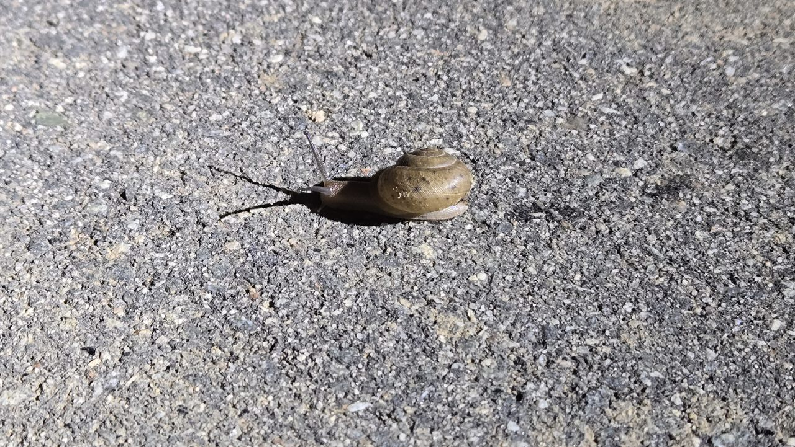
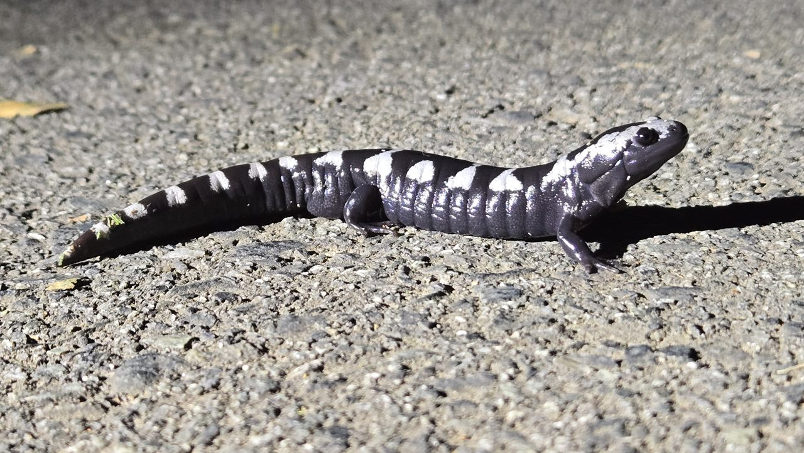
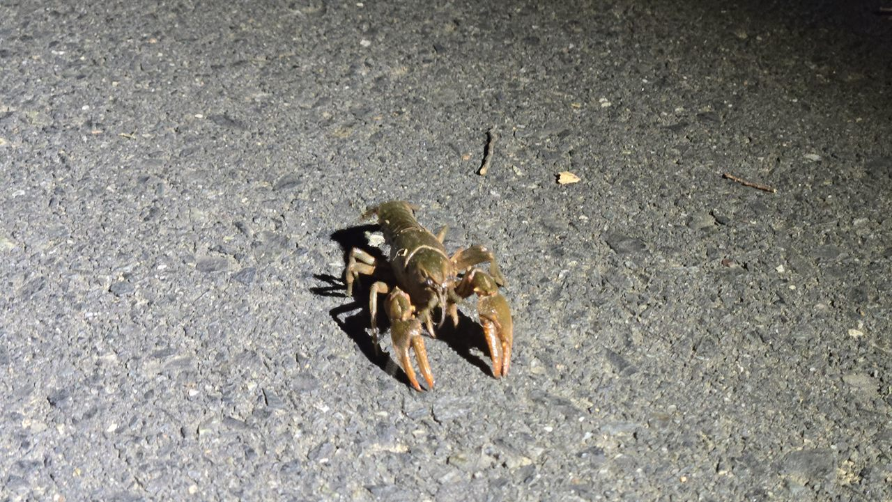

What — Animals on the Greenway at Night
This hobby is about noticing animals along the Greenway trail after dark and taking a few pictures when they appear. The focus is the wildlife encounter, not learning photography as a technical art.
The photos on this page show toads, a snail, a salamander, and a crawfish found along the Greenway trail.
I took these casual pictures with the base Samsung Galaxy S24 phone camera during walks along the trail, mostly at night.
A Third Toad Sighting

Taken on the Greenway trail at night.
Who — A Curious Trail Walker
This hobby suits someone who enjoys walking outdoors and paying attention to small signs of animal life.
I am not presenting myself as a professional photographer or wildlife expert. I am a trail visitor who likes to notice the animals that come out after dark.
A phone camera is enough for this kind of personal record: the main thing is spotting an animal, keeping a respectful distance, and taking a quick picture without disturbing it.
A Toad Spotted on the Path

Taken on the Greenway trail at night.
When — After Dark
The animals in this collection were encountered at night during walks on the Greenway trail.
Night walks feel different from daytime outings: the trail is quieter, visibility is lower, and each animal sighting is easy to miss if you hurry.
I take pictures when the trail is open and conditions allow, then keep moving so the animals are not kept from their route.
A Second Toad Sighting

Taken on the Greenway trail at night.
Where — The Greenway Trail
The Greenway trail is where these animal encounters happened. Its paved path and grassy edges make small wildlife easier to spot while walking.
Animals may appear right on the pavement or near the trail, so I watch the ground as well as the surrounding greenery.
I stay on the trail, avoid handling wildlife, and leave the animals and their habitat as I found them.
A Snail Crossing the Path

Taken on the Greenway trail at night.
How — Spot, Photograph, Move On
I walk attentively and look for animals along the trail without approaching or touching them.
When I see one, I use the Samsung Galaxy S24 base phone camera to take a quick picture, keeping a respectful distance and avoiding unnecessary disturbance.
Afterward, I can look back at the picture to remember what I saw and where it appeared on the trail.
A Striped Salamander

Taken on the Greenway trail at night.
Why — Enjoying Nighttime Wildlife
Animal sightings make an ordinary walk more interesting and give me a reason to pay closer attention to the trail.
Taking a picture lets me keep a reminder of each encounter without needing special camera equipment or a formal photography project.
These moments also encourage respect for wildlife: the best sighting is one where the animal can carry on undisturbed.
A Crawfish on the Trail

Taken on the Greenway trail at night.
AI Prompts and Attribution
AI assistance was used to write scripts/hobby.js, which switches between the hobby sections and updates the page title to match the selected section.
Prompt used: “Write scripts/hobby.js to show the hobby section selected from the navigation, hide the other sections, keep the URL hash and browser tab title in sync, and mark the active navigation link accessibly. Show the What section by default.”
The script shows the selected topic and hides the other hobby sections when a navigation link is chosen.
It also keeps the browser tab title synchronized with the heading of the visible section.